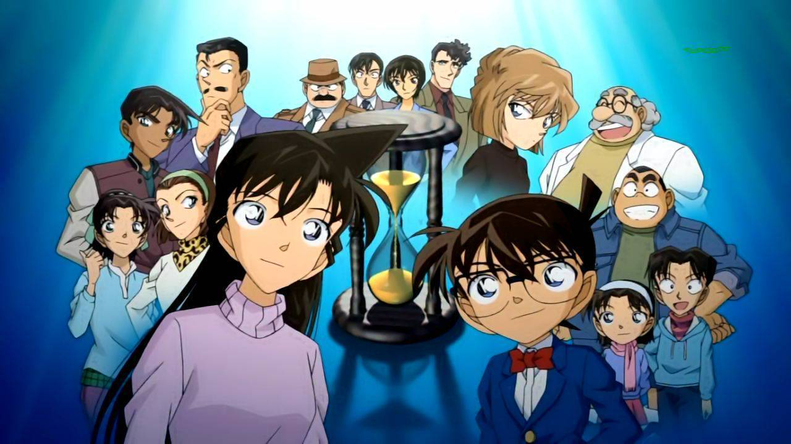

Home
Welcome to the Detective Conan movies website, where you can find all 26 movies of the series. Whether you're a long-time fan or new to the franchise, this is the perfect place to catch up on all the action and mystery
(we're sure you'll find something you'll love:)
Movies
| Banner | Title | description | rate | Trailer + Movie |
|---|---|---|---|---|

|
1-The Time Bombed Skyscraper (1997) | The detective genius Conan must solve a series of bombings or his true love will die! | ★★★★7,4 |
|
 |
2-The Fourteenth Target (1998) | People who were linked with Mori Kogoro are being attacked or killed according to their names' number sequences. | ★★★★7,3 | |
 |
3-The Last Wizard of the Century (1999) | Kaito Kid plotted to steal a rare Jeweled Easter Egg. Conan(together with his friends) is eager to stop the thief and uncover the mysteries surrounding the Jeweled Egg and the family who owns it. | ★★★★7,5 | |
 |
4-Captured in Her Eyes (2000) | Kaito Kid plotted to steal a rare Jeweled Easter Egg. Conan(together with his friends) is eager to stop the thief and uncover the mysteries surrounding the Jeweled Egg and the family who owns it. | ★★★★7,5 | |
 |
5-Countdown to Heaven (2001) | Multiple murders has been committed while the Black Organization members are roaming around Conan and his friends. Are they responsible for the killings? Or Is it someone else? | ★★★★★7,6 | |
 |
6-The Phantom of Baker Street (2002) | Conan and his friends were invited to the premier of an new virtual computer game. But someone programmed the game, that if they can't answer the riddle in the game, they all have to die. | ★★★★★8.6 | |
 |
7-Crossroad in the Ancient...(2003) | Five people get murdered by a sword and and also a important Buddha statue gets stolen, so Conan tries to find the murderer and the statue. | ★★★★7,1 | |
 |
8-Magician of the Silver Sky (2004) | An actress reached out to Kogoro Mori as she received a letter from the thief Kaito Kid about stealing an important Gem. Conan is faced with a difficult task of Stopping Kaito Kid who is disguised as Shinichi Kudo. | ★★★★7 | |
 |
9-Strategy Above the Depths (2005) | A murder was committed on a ship. To solve the case, Conan will need to open a case from 15 years ago. | ★★★★7 | |
 |
10-The Private Eyes' Requiem (2006) | Conan and Kogoro Mori was tasked to solve a crime on a given time. The lives of their loved ones(as well as their own) are on the line. Solving the mystery means saving everyone. | ★★★★7,5 | |
 |
11-Jolly Roger in the Deep Azure (2007) | 1700 times, Anne Bonny and Mary Read are 2 female pirates which protected their country from being attacked from england. People who sail to sea all fear JOLLY ROGER which was formed by red flag Jolly Rouge & devil OLD ROGER. Now 2007. Conan won in a gazette riddle and Mori used the money on vacation inside Koumi island with the kids and Ran. Iwagana, Koumi travel guide, wish to avail tourists' wisdoms to find Anne Bonny's 1700 plotted treasures. What was the precious treasure that Anne Bonny kept inside Yoriyajima since 1700 times when she worked with Mary Read? | ★★★★7,3 | |
 |
12-Full Score of Fear (2008) | 6yr ago there was a talented youth being killed. his fiancée Reiko Akiba is now a very popular Soprano. the people who killed Reiko's fiancé are all killed by the point of "Definite Perfect Pitch" (Jor-Dai-Yin-Gan) from this youth's true father, Fuwa , Domoto Kazuki's piano pitch adjuster. Domoto Academy bought new Stradivalous Viola and perform in the opening of the Domoto Hall. But Fuwa had installed 24 bombs inside Domoto Hall. Before they explode, Reiko Akiba and Conan gotta stop Fuwa's 24th bomb that destroy all the facilities and kill everyone inside Domoto Hall. BTW, finally, Rachel spoke that when Kudo play Guitar there was a very bizarre habit from Kudo that she could easily figure that it must be Shinichi. | ★★★★7,1 | |
 |
13-The Raven Chaser (2009) | The police superintendent, disguised by black suits (IRish), checked that Conan and Shinichi are 98% identical! Conan is getting into danger...! Would that police superintendent tell Gin about this news? Rachel broke Conan's bowl!next day when Rachel went school Serena spoke about the dark knight helmet...Conan went school to hear that his clay dolphin lose its dorsal fin... Would Conan be able to stay alive as Heiji hopes inside phone when talking about "BBQ in Kyoto"? | ★★★★★8 | |
 |
14-The Lost Ship in the Sky (2010) | Kid has his eyes set on the "Lady of the Sky" jewel aboard Bell 3, the largest airship in the world. However, a mysterious terrorist group called Red Shamu-neko has hijacked the airship, along with Conan and his allies Kogoro and Ran. | ★★★★7 | |
 |
15-Quarter of Silence (2011) | The explosion of a new Tokyo Subway line leads Conan and his friends in a snow-clad village. Here, after 8 years, the little detective sheds light on the dynamics behind the shocking event that caused the death of a woman and the coma of a 15 years old boy. Under the beautiful snow, Conan gets involved in something bigger than him. | ★★★★7.3 | |
 |
16-The Eleventh Striker (2012) | Due to past tragedies, someone looking for revenge hides bombs in soccer arenas multiple times and it's Conan's job to save everyone once again. | ★★★★7 | |
 |
17-Private Eye in the Distant Sea (2013) | Conan and his friends search for a foreign spy who might have also committed a murder. | ★★★★7.1 | |
 |
18-The Sniper from Another Dimension (2014) | Shuichi Akai is targeted by a mysterious sniper and Masumi Sera is shot. Tokyo is in panic, citizens are taken in the shooting of a sniper. Nothing is known about him. Why was Sera targeted? Will Akai survive from this? Jodie Starling and Subaru Okiya are also in this one. Will Conan be able to find and apprehend the culprit? | ★★★★7 | |
 |
19-Sunflowers of Inferno (2015) | Kaitou Kid and Vincent van Gogh's artworks feature heavily in the movie, according to an interview with Gosho Aoyama. The teaser preview at the end of Dimensional Sniper included references to van Gogh's "Sunflowers" series. | ★★★★7.3 | |
 |
20-The Darkest Nightmare (2016) | A spy infiltrated the Japanese National Police Agency, retrieving secret files of Britain's MI6, Germany's BND and America's CIA and FBI. Rei Furuya and a group of Tokyo Police PSB intercepted the spy during the getaway, and just before the major car accident, FBI Agent Shuichi Akai sniped and crashed the spy's vehicle. The next day, at the aquarium in Tokyo with the Ferris wheel, Conan and the Detective Boys found a woman with heterochromia iris who suffered memory loss and had a broken cell phone. Having decided to stay and help the woman regain her memory, Conan and the Detective Boys are under the watchful eye of Vermouth. | ★★★★7 | |
 |
21-The Crimson Love Letter (2017) | A bombing case at Nichiuri TV disrupts the Satsuki Cup competition and Conan, Heiji, and Kazuha are the only survivors. Conan meets a mysterious girl claiming to be Heiji's fiancée, Momiji Ooka, who is the Karuta champion at Kyoto High School. The reigning Satsuki Cup champion is murdered and Conan and Heiji investigate the case and uncover a secret connected with the Hyakunin Isshu | ★★★★7.2 | |
 |
22-Zero the Enforcer (2018) | Detective Conan investigates an explosion that occurs on the opening day of a large Tokyo resort and convention center. | ★★★★7 | |
 |
23-The Fist of Blue Sapphire (2019) | After being recovered from a pirate ship sunk in the nineteenth century off the coast of Singapore. | ★★★★7.8 | |
 |
24-The Scarlet Bullet (2021) | Conan's reasoning reveals the relevance of the apocalyptic WSG kidnapping incident that occurred in Boston, USA, fifteen years ago, and that the incident was also under the jurisdiction of the FBI. Is this a coincidence? What is going to happen in Japan, where many types of people from all over the world are gathered? | ★★★★7.7 | |
 |
25-The Bride of Halloween (2022) | During Halloween in Shibuya, Tokyo, a wedding is interrupted by an assailant and Takagi is injured while protecting Sato. At the same time, the perpetrator of a series of bombings three years ago escapes from prison and is pursued by Rei Furuya/Toru Amuro. A mysterious person in disguise puts a collar bomb on Amuro and Conan disarms it while hearing about an incident three years ago involving a virtual bomber named "Plamya" in Shibuya. Conan investigate and a disturbing shadow threatens them. | ★★★★★8 | |
 |
Movie 26 (release in 2023) | Many engineers from around the world gather at the marine facility "Pacific Buoy" on Hachijou Island, in the off sea south of central Tokyo coast, to witness the launch of a new system that connects all law enforcement camera systems around the world and enables facial recognition worldwide. Conan, along with Kogoro, Ran, Agasa, Haibara, and the Detective Boys, also heads there with an invitation from Sonoko. He receives a message from Subaru, who says that an Europol agent has been murdered in Germany by Gin. Perturbed, Conan sneaks onto the police ship led by Kuroda, which is bringing them to the island to protect the completion work, and tours the new facility, just in time for the Black Organization to kidnap a female engineer, seeking a piece of important data in her USB drive. A terrifying howl of screws is heard from the ocean as an unknown person approaches Haibara. | Not available |
Cast
I.voice actors:
- Conan Edogawa
- Minami Takayama
- Ran Mōri
- Wakana Yamazaki
- Kogorō Mōri
- Rikiya Koyama
- Shinichi Kudō
- Kappei Yamaguchi
- doctor Agasa
- Kenichi Ogata
- Haibara Ai
- Megumi Hayashibara
- Ayumi Yoshida
- Yukiko Iwai
- Mitsuhiko Tsuburaya
- Ikue Ōtani
- Genta Kojima
- Wataru Takagi
- Heiji Hattori
- Ryō Horikawa
- Kazuha Tōyama
- Yūko Miyamura
- Sonoko Suzuki
- Naoko Matsui
II.Manga writer:

III.animaton studio:
TMS Entertainment:TMS Entertainment is a Japanese animation studio founded in 1964. The company is known for producing a wide variety of animated TV series, films, and specials, including popular franchises such as "Lupin the Third," "Detective Conan," and "Pokemon." TMS Entertainment has also collaborated with international studios and distributors to produce and distribute animated content worldwide. In addition to traditional 2D animation, the company has also produced 3D animated projects using computer graphics. TMS Entertainment is recognized as one of the leading animation studios in Japan and has contributed to the development and popularity of anime globally.
About
-my name is Mohamed Hassen Lamine I am a student who learn web development at Gomycode center, I am excited to share my work with you. On my site, you'll find a collection of my projects, and updates on my latest works. I invite you to take a look around and get to know me as a web developer. I hope you'll find something here that speaks to you. Thank you for visiting my website, and I hope you enjoy your time here!

|